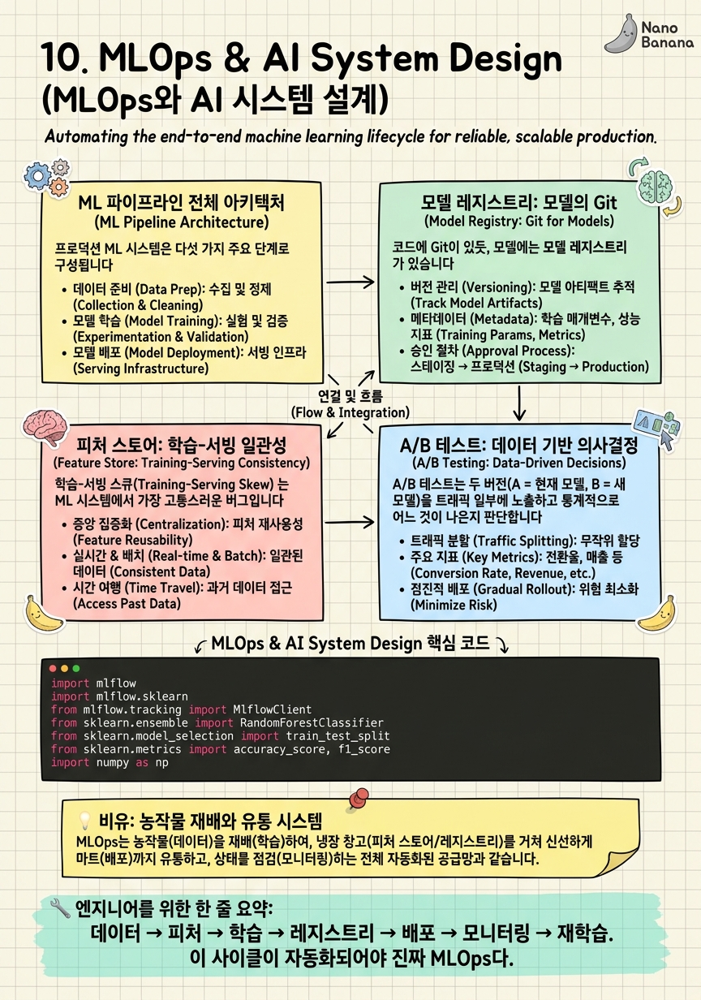

MLOps & AI System Design

🎯 학습 목표
- 학습-서빙-모니터링-재학습의 ML 생명주기 전체를 설계할 수 있다
- MLflow나 W&B로 실험 추적과 모델 레지스트리를 운영할 수 있다
- 온라인 피처 스토어(Redis)와 오프라인 피처 스토어(PostgreSQL)의 차이를 이해한다
- A/B 테스트 프레임워크를 설계하고 통계적 유의성을 평가할 수 있다
- 모델 드리프트를 자동으로 감지하고 재학습 파이프라인을 트리거하는 시스템을 설계할 수 있다
이 코스의 마지막 챕터에서는 앞서 배운 모든 것을 AI 시스템 설계에 통합합니다. HTTP, 데이터베이스, API, 컨테이너, K8s, 모니터링, CI/CD — 이 모든 것이 ML 파이프라인의 각 컴포넌트에서 역할을 합니다.
MLOps(ML Operations) 는 ML 모델의 개발, 배포, 모니터링, 유지보수를 DevOps 원칙으로 자동화하는 실천 방법론입니다. 2019년 Google의 Hidden Technical Debt in Machine Learning Systems 논문이 ML 시스템의 복잡성을 체계화하면서 주목받기 시작했습니다.
ML 시스템의 독특한 과제는 코드뿐만 아니라 데이터와 모델 도 변경된다는 점입니다. 동일한 코드로도 다른 데이터로 학습하면 다른 모델이 나옵니다. 이 세 가지(코드, 데이터, 모델)를 함께 버전 관리하고 추적하는 것이 MLOps의 핵심입니다.
핵심 내용
ML 파이프라인 전체 아키텍처
프로덕션 ML 시스템은 다섯 가지 주요 단계로 구성됩니다.
1. 데이터 수집·처리: 원시 데이터를 수집(이벤트 로그, 사용자 행동, 외부 API)하고 특성(Feature)으로 변환합니다. Apache Kafka로 실시간 이벤트를 수집하고, Apache Spark로 배치 처리합니다.
2. 피처 엔지니어링·스토어: 처리된 특성을 피처 스토어에 저장합니다. 학습과 서빙이 동일한 특성을 사용하도록 보장하는 것이 핵심입니다.
3. 모델 학습·실험: 실험을 추적(MLflow/W&B)하고, 최적 하이퍼파라미터를 찾으며, 모델을 학습합니다. 각 실험의 코드·데이터·파라미터·메트릭·아티팩트를 모두 기록합니다.
4. 모델 레지스트리·배포: 검증된 모델을 레지스트리에 등록하고, 스테이징 → 프로덕션 순서로 배포합니다. KServe, Triton Inference Server, vLLM 등 목적에 맞는 서빙 플랫폼을 선택합니다.
5. 모니터링·재학습: 모델 성능과 데이터 드리프트를 모니터링하고, 성능이 임계값 이하로 떨어지면 자동으로 재학습 파이프라인을 트리거합니다.
모델 레지스트리: 모델의 Git
코드에 Git이 있듯, 모델에는 모델 레지스트리 가 있습니다. 모델 레지스트리는 학습된 모델의 메타데이터(코드 버전, 학습 데이터, 하이퍼파라미터, 메트릭), 아티팩트(가중치 파일), 배포 상태(Staging/Production)를 관리합니다.
MLflow Model Registry의 모델 생명주기:
- None: 등록된 버전이 없는 상태
-
Staging: 테스트 중인 버전. 스테이징 환경에 배포.
-
Production: 현재 서빙 중인 버전
- Archived: 더 이상 사용하지 않지만 기록 보관
mlflow.log_metric("accuracy", 0.923), mlflow.log_params({"lr": 0.001, "epochs": 10}), mlflow.log_artifact("model.pkl")로 실험의 모든 것을 기록합니다.
모델 버전 비교 는 레지스트리의 핵심 기능입니다. 두 실험의 메트릭을 비교하고, 어떤 데이터로 학습했는지, 어떤 코드 버전인지를 추적합니다. "지난달 정확도가 높았던 모델 조건을 재현해달라"는 요청에 즉시 답할 수 있어야 합니다.
피처 스토어: 학습-서빙 일관성
학습-서빙 스큐(Training-Serving Skew) 는 ML 시스템에서 가장 고통스러운 버그입니다. 학습 시 특성을 age = current_year - birth_year로 계산했는데, 서빙 시 age = current_year - birth_year - 1로 계산하면 모델이 학습과 다른 입력을 받습니다. 미묘한 계산 차이가 성능 저하를 만듭니다.
피처 스토어 는 학습과 서빙에서 동일한 특성 변환 로직을 공유하도록 보장하는 플랫폼입니다. Feast, Tecton, Vertex AI Feature Store가 대표적입니다.
피처 스토어의 두 저장소:
-
오프라인 스토어(Offline Store): 과거 특성 데이터를 저장합니다. 학습 데이터셋 생성에 사용. PostgreSQL, BigQuery, S3에 Parquet 형태.
-
온라인 스토어(Online Store): 최신 특성값을 낮은 레이턴시로 제공합니다. 실시간 서빙에 사용. Redis, DynamoDB.
특성 정의는 단 한 번만 작성합니다. 같은 정의가 오프라인 배치 처리와 온라인 서빙 양쪽에서 사용됩니다.
A/B 테스트: 데이터 기반 의사결정
A/B 테스트는 두 버전(A = 현재 모델, B = 새 모델)을 트래픽 일부에 노출하고 통계적으로 어느 것이 나은지 판단합니다.
A/B 테스트 설계 시 주의사항
샘플 크기 는 사전에 계산합니다. 통계적 유의성(p-value < 0.05)과 검정력(Power ≥ 0.8)을 만족하는 최소 샘플 수를 계산해야 합니다. 너무 일찍 결론을 내리면 통계적 오류를 범합니다.
실험 단위 는 사용자 레벨이어야 합니다. 같은 사용자가 요청마다 A/B를 다르게 경험하면 일관성이 없어집니다. 사용자 ID의 해시값으로 실험 그룹을 고정합니다.
지표 선택 이 중요합니다. 직접 지표(클릭률, 구매 전환율)와 간접 지표(클릭이 많아도 구매는 적을 수 있음)를 구분합니다. AI 서비스에서는 모델 정확도(오프라인 지표)보다 비즈니스 지표(사용자 체류 시간, 재방문율)가 더 중요할 수 있습니다.
Guardrail 지표 는 실험이 다른 중요 지표를 해치지 않는지 확인하는 안전장치입니다. 클릭률은 올라갔지만 페이지 로드 시간이 2초 증가했다면 롤아웃해선 안 됩니다.
모델 드리프트 감지와 자동 재학습
프로덕션 모델은 시간이 지날수록 성능이 저하됩니다. 세상이 변하기 때문입니다. 코로나 전에 학습한 여행 추천 모델은 코로나 이후 무의미해집니다.
드리프트의 두 종류
-
Data Drift(입력 드리프트): 입력 특성의 분포가 변합니다. 텍스트 분류 모델에 새로운 도메인의 텍스트가 들어오기 시작하는 경우.
-
Concept Drift(개념 드리프트): 입력과 레이블의 관계가 변합니다. "저렴한" 기준이 1만원에서 5만원으로 바뀌는 경우.
드리프트 감지 방법
-
통계적 테스트: Kolmogorov-Smirnov 테스트, Population Stability Index(PSI)로 분포 변화를 수치화합니다.
-
예측 분포 모니터링: 모델 출력의 평균, 분산, 클래스 비율 변화를 추적합니다.
-
레이블된 실시간 데이터 활용: 일부 예측에 대해 정답 레이블을 수집해 실시간 정확도를 측정합니다.
자동 재학습 파이프라인 은 드리프트가 감지되거나 성능이 임계값 이하로 떨어지면 Argo Workflows 또는 GitHub Actions를 트리거해 새 데이터로 학습을 시작합니다. 새 모델이 기존 모델보다 좋으면 자동으로 모델 레지스트리에 등록하고 카나리 배포를 시작합니다.
💡 비유로 이해하기
ML 파이프라인을 농업 생산 시스템으로 이해해봅시다. 데이터는 토양과 날씨 입니다. 같은 씨앗(알고리즘)이라도 토양(데이터)이 다르면 다른 수확물(모델)이 나옵니다. 토양 분석(데이터 분석)이 선행되어야 합니다.
피처 엔지니어링은 토양 개량 입니다. 원시 토양(로우 데이터)에 비료(정규화, 특성 추출)를 넣어 작물이 잘 자라도록 만듭니다. 피처 스토어는 이 개량된 토양 데이터를 저장해두는 창고입니다.
모델 레지스트리는 종자 은행 입니다. 올해 가장 좋은 품종(모델)을 선별해 저장하고, 내년에 다시 심을 수 있도록 버전을 관리합니다. A/B 테스트는 시험 농장 입니다. 새 품종을 전체 농장에 심기 전에 일부 구획에서 기존 품종과 비교해봅니다. 모니터링은 수확량 측정 이고, 드리프트 감지는 토양 산성화 경보 입니다.
💻 코드 예시
MLflow로 실험을 추적하고 모델을 레지스트리에 등록하는 전체 흐름입니다. 학습부터 레지스트리 등록, 배포 승격까지 구현합니다.
import mlflow
import mlflow.sklearn
from mlflow.tracking import MlflowClient
from sklearn.ensemble import RandomForestClassifier
from sklearn.model_selection import train_test_split
from sklearn.metrics import accuracy_score, f1_score
import numpy as np
MLFLOW_TRACKING_URI = "http://mlflow-server:5000"
EXPERIMENT_NAME = "sentiment-classifier"
MODEL_NAME = "sentiment-model-prod"
def train_and_register(X, y, params: dict):
mlflow.set_tracking_uri(MLFLOW_TRACKING_URI)
mlflow.set_experiment(EXPERIMENT_NAME)
X_train, X_test, y_train, y_test = train_test_split(X, y, test_size=0.2)
with mlflow.start_run() as run:
# 하이퍼파라미터 기록
mlflow.log_params(params)
# 학습
model = RandomForestClassifier(**params)
model.fit(X_train, y_train)
# 메트릭 기록
y_pred = model.predict(X_test)
acc = accuracy_score(y_test, y_pred)
f1 = f1_score(y_test, y_pred, average="weighted")
mlflow.log_metrics({"accuracy": acc, "f1_score": f1})
# 모델 아티팩트 저장
mlflow.sklearn.log_model(
model,
artifact_path="model",
registered_model_name=MODEL_NAME, # 레지스트리에 자동 등록
)
print(f"Run {run.info.run_id}: acc={acc:.4f}, f1={f1:.4f}")
return run.info.run_id, acc
def promote_to_production(run_id: str, min_accuracy: float = 0.90):
client = MlflowClient(tracking_uri=MLFLOW_TRACKING_URI)
# 해당 run의 등록된 모델 버전 찾기
versions = client.search_model_versions(f"run_id='{run_id}'")
if not versions:
raise ValueError("No registered version for this run")
version = versions[0].version
# 메트릭 검증 후 Production으로 승격
run_data = client.get_run(run_id).data
if run_data.metrics.get("accuracy", 0) >= min_accuracy:
client.transition_model_version_stage(
name=MODEL_NAME,
version=version,
stage="Production",
archive_existing_versions=True, # 기존 Production을 Archived로
)
print(f"Version {version} promoted to Production")
else:
print(f"Accuracy {run_data.metrics['accuracy']:.4f} below threshold {min_accuracy}")
# 실행 예시
if __name__ == "__main__":
X = np.random.randn(1000, 20)
y = (X[:, 0] > 0).astype(int)
run_id, acc = train_and_register(X, y, {"n_estimators": 100, "max_depth": 5})
promote_to_production(run_id, min_accuracy=0.85)mlflow.start_run()은 컨텍스트 매니저로 실험 실행을 시작합니다. log_params, log_metrics, log_model로 실험의 모든 것을 자동으로 기록합니다. registered_model_name을 지정하면 모델이 레지스트리에 자동 등록됩니다. archive_existing_versions=True는 기존 Production 버전을 Archived로 이동해 하나의 버전만 Production 상태가 되도록 합니다.
🏭 현업에서의 평가
✅ 시니어가 보는 것
- 학습-서빙 스큐(Training-Serving Skew)를 인식하고 방지하는 방법을 아는가
- A/B 테스트에서 표본 크기와 실험 기간을 사전 계산하는가
- 모델 재학습 트리거 기준과 자동화 범위를 합리적으로 설계하는가
⚠️ 레드 플래그
- 모델을 학습 후 재현 불가능하게 저장하는 경우 (파라미터·데이터·코드 미기록)
- 오프라인 메트릭(정확도)만 보고 온라인 비즈니스 지표를 무시하는 경우
- 모든 서비스에 최신 MLOps 도구를 적용하려는 과도한 복잡화
🎤 예상 인터뷰 질문
- 프로덕션 모델의 정확도가 갑자기 떨어졌습니다. 코드 변경도 없었는데 왜 그럴 수 있고, 어떻게 디버깅하겠어요?
- 같은 모델을 여러 지역(한국, 미국, 일본)에 배포할 때 각 지역 데이터로 별도 학습해야 하나요? 어떻게 결정하겠어요?
- MLflow 없이 작은 팀에서 실험을 관리하라면 어떻게 하겠어요?
✨ 핵심 요약
ML 생명주기
데이터 → 피처 → 학습 → 레지스트리 → 배포 → 모니터링 → 재학습. 이 사이클이 자동화되어야 진짜 MLOps다.
모델 = 코드 + 데이터 + 파라미터
모델 재현을 위해 세 가지를 모두 버전 관리해야 한다. 하나라도 빠지면 재현이 불가능하다.
학습-서빙 스큐 방지
피처 스토어로 학습과 서빙이 동일한 변환 로직을 공유한다. 미묘한 차이가 모델 성능을 저하시킨다.
오프라인 ≠ 온라인 메트릭
정확도 0.95 모델이 비즈니스 가치를 항상 만드는 것은 아니다. A/B 테스트로 비즈니스 지표를 검증한다.
드리프트 = 조용한 저하
코드 변경 없이 모델이 나빠진다. 입력 분포와 예측 분포를 항상 모니터링한다.
MLOps 성숙도 단계
처음부터 모든 것을 자동화하려 하지 않는다. 수동 → 반자동 → 완전 자동화 순서로 단계적으로 발전시킨다.